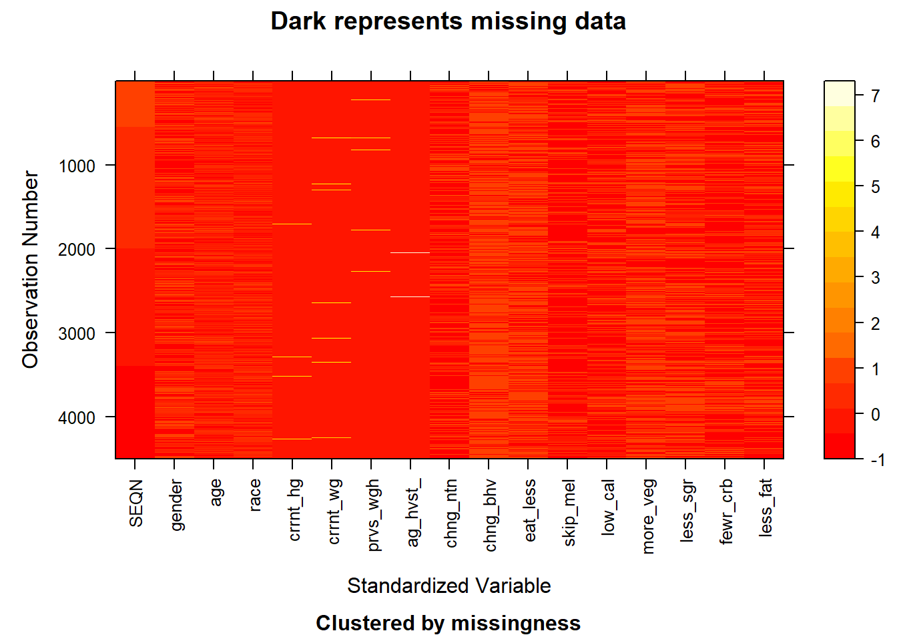

Code
library(mi)
# read the pre-processed data from csv
raw_whq <- read.csv("data/p_whq_new.csv")
# show original missing-value plot
before <- missing_data.frame(raw_whq)
image(before)The project utilizes data from the National Health and Nutrition Examination Survey (NHANES), obtained from the Questionnaires, Datasets, and Related Documentation section covering the cycles spanning from 2017 to March 2020.
The data is collected by the National Center for Health Statistics (NCHS) under the Centers for Disease Control and Prevention (CDC) through interviews and questionnaires. NHANES employs a comprehensive approach to data collection. Trained interviewers conduct in-person interviews and ask questions by using the Computer-Assisted Personal Interview (CAPI) system. The questionnaire gathers a broad range of dimensions on demographics, health status, dietary habits, and lifestyle factors directly from participants. Participants aged 16 years and older in the NHANES 2017-March 2020 pre-pandemic sample were eligible. However, eligibility varies by age for some questions.
NHANES data are collected in different formats. Questionnaire responses are recorded in a structured manner. Laboratory test results and physical measurements are often numerical. In this project, we will utilize the questionnaire responses to record the self-reported weight changes and some related factors. The research will be conducted surrounding the possible impact factor for weight loss, and the detailed research plan shown in section 2.2. The dimension for the original data set is 10195 samples with 36 features. However, based on the research questions, we will select the relevant features and conduct pre-processing, and the pre-processed data set has 4781 objects with 13 features.
NHANES is conducted a two-year cycle starting 1999. While the new data is collected regularly, the release of updated datasets may not occur as frequently, and the data from 2021 to 2023 is currently unavailable. In our project, we use the data from 2017 to March 2020 Pre-Pandemic instead of the data from 2019 to 2020 because of the immediate pandemic effects. The NHANES program suspended field operations in March 2020 due to the coronavirus disease pandemic. As a result, data collection for the NHANES 2019-2020 cycle remained incomplete and the collected data are not nationally representative. To address this problem, data collected from 2019 to March 2020 were combined with data from the NHANES 2017-2018 cycle to form a nationally representative sample of NHANES 2017-March 2020 pre-pandemic data.
While the NHANES dataset is generally reliable and valuable, it is essential to be aware of potential issues and limitations when working with this data.
The complex sampling methodology may introduce sampling error, and non-response bias could affect the generalizability of the findings.
Some information, such as dietary habits and lifestyle factors, is self-reported and subject to recall bias. Participants may not always accurately remember or report their behaviors, leading to potential inaccuracies.
While NHANES captures a broad range of health indicators, it may not fully address all dimensions of health disparities. Certain subgroups may be underrepresented or face unique health challenges not fully captured in the survey.
Import the data:
Download the “P_WHQ Data” XPT file from the CDC website.
Import and read the data in RStudio with read_xpt() function.
Documentation and Links:
National Health and Nutrition Examination Survey (NHANES) 2017-March 2020 Data Documentation, Codebook, and Frequencies: https://wwwn.cdc.gov/nchs/nhanes/search/datapage.aspx?Component=Questionnaire&Cycle=2017-2020
An analysis of key health indicators, including weight and height will be conducted. We will also calculate and show each sample’s BMI for further research.
The study will examine the distribution of participants’ self-reported heaviest weight across various ages to identify whether there is a common age period for weight gain.
Since BMI is more scientific and representative of personal weight health, trends and patterns in BMI changes will be analyzed longitudinally to understand the dynamics of weight management over time.
Examining Weight Loss Intentions
The concordance between individuals’ weight loss intentions and actual BMI changes will be explored.
Dieting and BMI
The relationship between dieting behaviors (e.g. skipping meals, eating less) and BMI changes.
Dietary Preferences
The association between dietary preferences and BMI trajectories will be assessed.
Combined Impact
A multivariate approach will be used to understand the collective impact of various factors on BMI changes.
After pre-processing, some irrelevant features have been removed. Moreover, the original representative strings have been converted to meaningful values based on the given code book. And currently, we will look into the missing value pattern for the pre-processed data set.
library(mi)
# read the pre-processed data from csv
raw_whq <- read.csv("data/p_whq_new.csv")
# show original missing-value plot
before <- missing_data.frame(raw_whq)
image(before)With the above plot given the pattern of the missing value, we can observe that the missing value lies in the features of current_height and age_heaviest_weight. The missing value in this data set is relatively few and we choose to delete the rows that contain these missing values (NA). After the operation, we obtain a new plot showing the pattern for the whole data set. Right now, the whole data set doesn’t contain the missing value as shown below.
library(dplyr)
# handle missing value
whq <- raw_whq |>
filter(!is.na(current_height)) |>
filter(!is.na(current_weight)) |>
filter(!is.na(previous_weight)) |>
filter(!is.na(age_heaviest_weight))
# show after-version missing-value plot
after <- missing_data.frame(whq)
image(after)